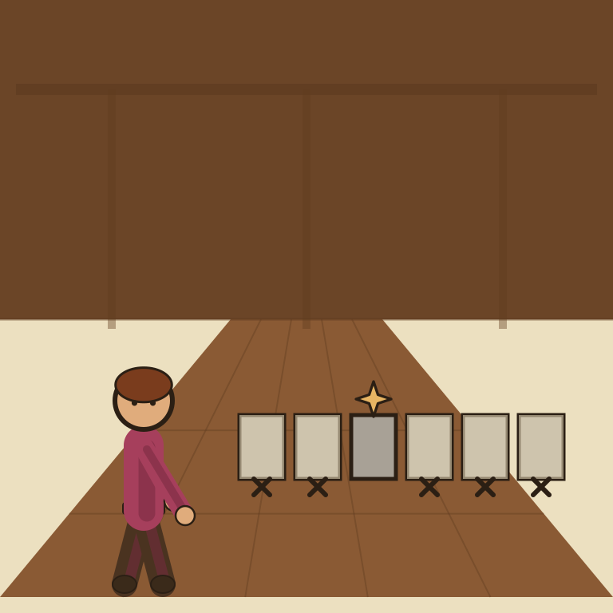
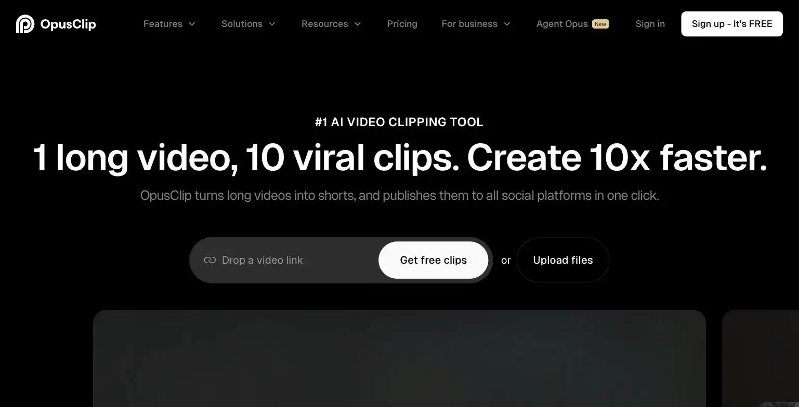

OpusClip

Each fragment came back scored for how impressive it was. The scores were, uncomfortably, honest.
OpusClip turns long-form video into short social clips automatically, built for solopreneurs repurposing one recording into a week of posts across TikTok, Instagram, LinkedIn, and more. Pricing runs Starter at $15/month up to Pro at $29/month ($14.50/month billed yearly), with a clip-scoring feature that ranks generated clips by predicted engagement. The site's verdict is worth it specifically for creators who already record long-form video and need a faster repurposing pipeline, not a starting point if you have no source footage yet.
OpusClip chops your long-form video into short clips and scores each one by predicted engagement, so now a robot can tell you exactly how unimpressive your content is before you even post it.
- Value for price5.5/10
- Capability6.5/10
- Ease of use7/10
- Trial safety5.5/10
OpusClip ingests a long video, a podcast episode, webinar, or interview, and automatically identifies and cuts multiple short, vertical clips from it, then scores each clip by predicted engagement so you know which ones are worth prioritizing for posting first.

OpusClip's clip-scoring system rates each auto-generated clip by predicted performance before you post it, turning a purely manual editing judgment call into a data-informed starting point for which clips to prioritize across TikTok, Instagram, LinkedIn, Facebook, and X.
Example from opus.pro. Not independently tested by Solos Gems.Pricing breakdown
- Starter ($15/mo): Monthly billing only, core clipping and captioning features
- Pro ($29/mo, $14.50/mo billed yearly): Save up to 50% on annual billing, expanded clip volume and editing features
- Business: Custom pricing for agencies or high-volume content teams
Does the ROI actually work for a solo creator
OpusClip's value depends entirely on whether you already produce long-form video, a podcast, YouTube channel, or recorded webinars. If you do, turning one recording into 5-10 short clips replaces hours of manual editing work each week, and the $14.50/month annual Pro price is a clear win. If you don't already record long-form content, this tool gives you nothing to work with, it repurposes existing footage, it doesn't generate original video.
Pros
- Genuinely saves hours of manual short-form editing for existing long-form creators
- Clip scoring gives a data-informed starting point instead of guessing which moments to post
- Annual Pro pricing at $14.50/month is cheap relative to the editing time it replaces
Cons
- Zero value if you don't already produce long-form video to repurpose
- Starter tier is monthly-only, no annual discount at the entry price point
- Clip scoring is a prediction, not a guarantee of actual engagement
Common questions
Is OpusClip worth it if I don't already make long videos?
No, zero value if you don't already produce long-form video to repurpose. It's a repurposing tool, not a reason to start recording video, there's nothing to clip without existing footage.
Does the entry Starter tier have an annual discount?
No, Starter is monthly-only with no annual discount at that entry price point, unlike Pro, which drops to $14.50/month billed yearly. Factor that into which tier actually saves money over a year.
Can I trust OpusClip's clip-scoring for engagement?
Treat it as a prediction, not a guarantee. Clip scoring estimates likely engagement but doesn't guarantee actual performance, use it to prioritize which clips to publish first, not as a final judgment.